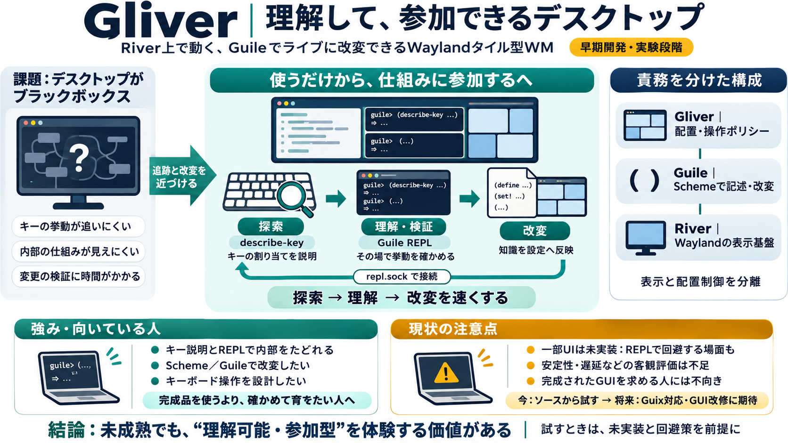

ebeem/gliver: guile scheme wayland window manager based on river and inspired by emacs and stumpwm - Codeberg.org
`Gliver` `${XDG_STATE_HOME}/gliver/gliver.log` `~/.local/state/gliver/gliver.log` `REPL` `Emacs Geiser` `geiser-connect-…

`Gliver` `${XDG_STATE_HOME}/gliver/gliver.log` `~/.local/state/gliver/gliver.log` `REPL` `Emacs Geiser` `geiser-connect-…
Notably, that release will be `0.0.5`. If that sounds early, Gliver still is early. There are bugs, and you will probabl…
only at the logic layer where you're thinking in terms of abstract Concepts like Windows and and coordinates sure that p…
## Features River defers all window management policy to a separate window manager implementing the river-window-manage…
The stated goals for River is to make getting into Wayland development easier and to allow its "window managers" to be m…